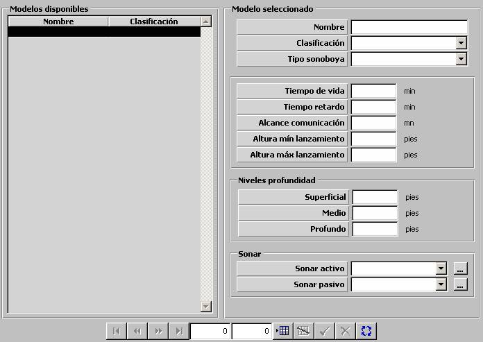

Sonoboya

Descripción de los parámetros:
Tipo de Sonoboya: Puede tomar los siguientes valores:
Este parámetro determina el comportamiento del modelo de sonoboya. Es tenido en cuenta para seleccionar la representación gráfica de las detecciones de la sonoboya. Las sonoboyas activas (omni y dir) tienen asociado un sonar activo, las pasivas (omni y dir) y las VLAD un sonar pasivo. Las sonoboyas ANM proporcionan información del nivel de ruido ambiental, y las BT obtienen la traza batitérmica. Este parámetro determina también el número de canales del procesador de sonoboya que consume al ser procesada.
Tiempo de Vida: Este parámetro determina el tiempo que permanece activa una sonoboya a partir de su activación automática. Una vez transcurrido este tiempo, la sonoboya deja de estar activa, por lo que no conectará con ningún Procesador de Sonoboyas y no podrá ser procesada.
Unidades: minutos
Rango: 0 – 9999
Tiempo de Retardo: Este parámetro determina el tiempo que transcurre desde que la sonoboya cae al agua hasta que se produce su activación. La sonoboya no podrá ser adquirida por un Procesador de Sonoboyas hasta que haya transcurrido este tiempo.
Unidades: minutos
Rango: 0 – 100
Alcance Comunicación: Este parámetro determina la distancia máxima a la que un procesador de sonoboya puede conectar con este tipo de sonoboya. Por encima de esta distancia la sonoboya no podrá ser adquirida por el Procesador de Sonoboya por lo que no podrá procesarla.
Unidades: millas
Rango: 0 – 9999
Altura Mínima de Lanzamiento: Este parámetro determina la altura mínima de la unidad lanzadora de sonoboyas a la que puede lanzar esta sonoboya.
Unidades: pies
Rango: 0 – 9999
Altura Máxima de Lanzamiento: Este parámetro determina la altura máxima de la unidad lanzadora de sonoboyas a la que puede lanzar esta sonoboya.
Unidades: pies
Rango: 0 – 9999
Niveles de Profundidad: Estos parámetros determinan los tres niveles de profundidad a los que la sonoboya puede ser lanzada o desplegada. El nivel de profundidad del lanzamiento de la sonoboya podrá ser seleccionado por el operador. Si la sonoboya es activa, y se encuentra adquirida por un Procesador de Sonoboyas, el operador podrá desplegar la sonoboya, es decir, pasarla al siguiente nivel de profundidad, o hundirla si se encuentra en el nivel profundo. Si la sonoboya es pasiva, se pude seleccionar la profundidad al lanzarla, pero una vez en el agua, ya no se puede cambiar. Estos parámetros sólo podrán ser introducidos si la sonoboya es de tipo Activa Omni, Activa Dir, Pasiva Omni o Pasiva Dir. Estas profundidades no podrán ser superiores a la longitud del cable del sonar asociado.
Superficial: Mínimo nivel de profundidad.
Unidades: pies
Rango: 0 – 99999
Medio: Nivel de profundidad intermedio.
Unidades: pies
Rango: 0 – 99999
Profundo: Máximo nivel de profundidad.
Unidades: pies
Rango: 0 – 99999
Sonar: Estos parámetros determinan el modelo de sonar asociado al modelo de sonoboya.
Sonar Activo: Sonar Activo asociado al modelo de sonoboya. Ver apartado Sonar Activo. Este parámetro sólo puede ser introducido si se ha seleccionado tipo de sonoboya Activa Omni o Activa Dir.
Sonar Pasivo: Sonar Pasivo asociado al modelo de sonoboya. Ver apartado Sonar Pasivo. Este parámetro sólo puede ser introducido si se ha seleccionado tipo de sonoboya Pasiva Omni, Pasiva Dir o VLAD.